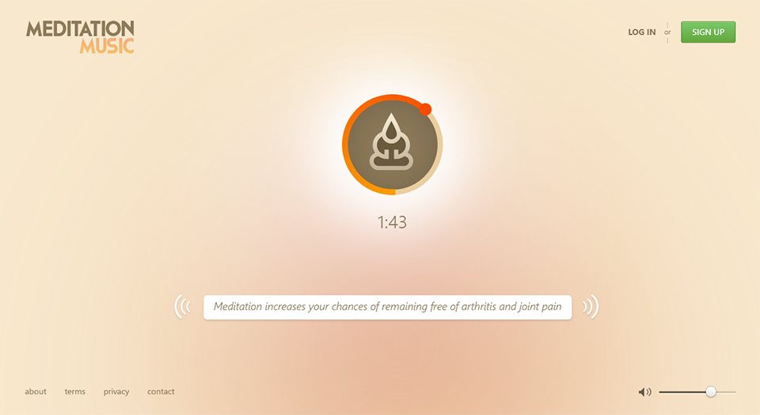
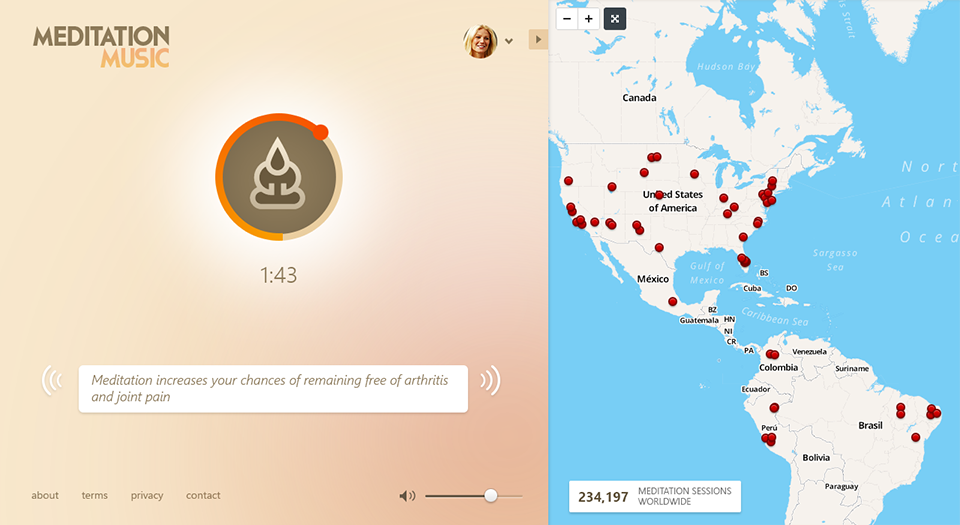
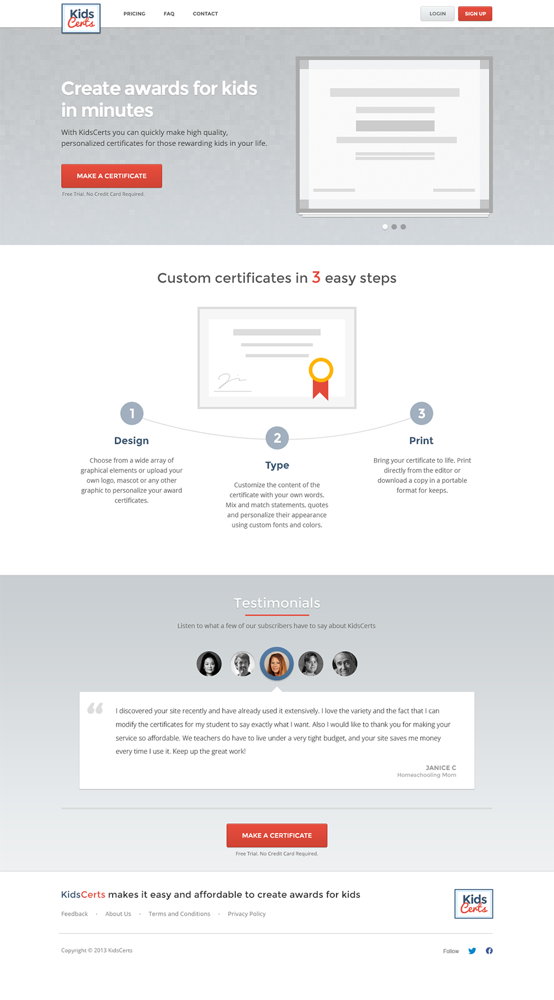

Archive
-
Classroom.tv
Web & Logo
× Classroom.tv · logo Classroom.tv · homepage -
Unlistr
Web & Illustration
× Unlistr · illustration Unlistr · landing page -
Meditation Music
Web & Illustration
× 
Meditation Music · player 
Meditation Music · second screen -
KidsCerts
Web & Logo
× 
KidsCerts · certificates for kids · landing page and logo -
Aprende.tv
Web & Illustration
× Aprende.tv · online courses · homepage and illustrations -
Golem
Web
× Golem · domain aftermarket · homepage